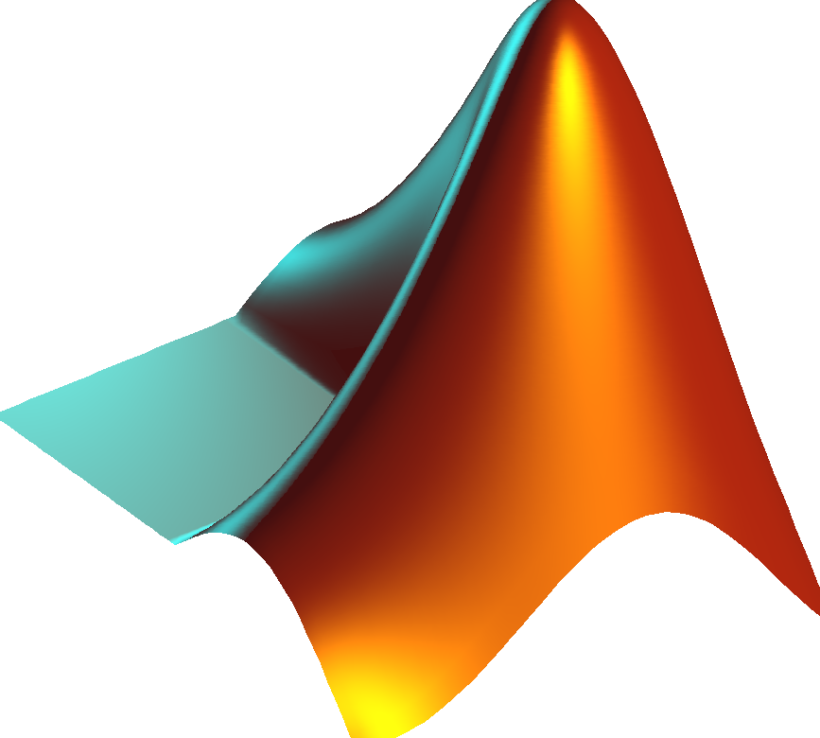
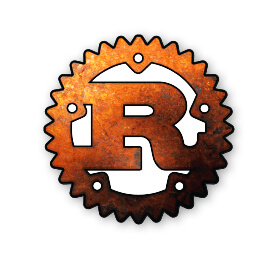

| Name |
ICON |
Description |
Extension |
| Javascript |
 |
JavaScript is a high-level programming language that is one of the core technologies of the World Wide Web. It is used as a client-side programming language by over almost 95% of the websites. The programming language was originally used only to develop web browsers but is now used for server-side website deployments and non-web browser applications as well.
|
.js |
| Python |
 |
Python is one of the most popular programming languages in the world. The language is easy to learn for beginners because of its readability. It is a free, open-source programming language with extensive support modules and community development, easy integration with web services, user-friendly data structures, and GUI-based desktop applications.
|
.py |
| Java |
-Logo.wine.png) |
Java is one of the most popular programming languages that are used for modern technologies. This is a general-purpose programming language with an object-oriented structure that can be used regardless of the nature of platform capabilities. Java is mainly recognized for its portability across platforms, starting from mainframe data centers to smartphones.
|
.java |
| C++ |
 |
C is a mid-level programming language, and C++ is a high-level one. Both the programming languages are classic in nature. Almost every developer who enters the IT industry should be well-aware of these programming languages. C is a classic programming language that is obligatory for everyone to know in case they wish to enter the software development industry, and C++ is the language that was responsible for creating the C programming language.
|
.cpp |
| Kotlin |
-Logo.wine.png) |
Kotlin is a general-purpose programming language that is extensively used to develop Android apps, web applications, desktop applications, and server-side application development. Kotlin is used by major companies like Coursera, Pinterest, and PostMates, to name a few.
|
.kt |
| Matlab |
 |
MATLAB is a proprietary programming language that was specially built for scientists and engineers. Programmers generally use MATLAB to build machine learning and deep learning applications. MATLAB-based programming enables users to analyze data, create algorithms, process images, and verify the research.
|
.mat |
| PHP |
 |
PHP is a widely used scripting language. According to reports, almost 22% of the professionals around the world use it. The language is best suited for web development and can be easily embedded in HTML. Like most other languages, PHP is open-source. It is simple to use, which explains why most beginners like the language.
|
.php |
| Swift |
.png) |
SWIFT is an open-source programming language that is easy to learn. The language requires fewer coding skills as compared to other programming languages and can be used with IBM Swift Sandbox and IBM Bluemix. It is used in popular iOS apps like WordPress, Mozilla Firefox, SoundCloud, and others.
|
.swift |
| R |
 |
The R programming language is quite less popular among IT professionals, but professionals who are interested in statistical computing and graphics can always choose the R programming language. It is extensively used for data analysis and visualization, as well as for various experiments with data.
|
- |
| Rust |
 |
Rust has consistently ranked as one of the tops, among all the modern programming languages. According to reports, almost 86% of the users have claimed that they are interested in continuing to develop using it. Rust is a multi-paradigm programming language that allows developers to work in a variety of programming styles.
|
.rs |